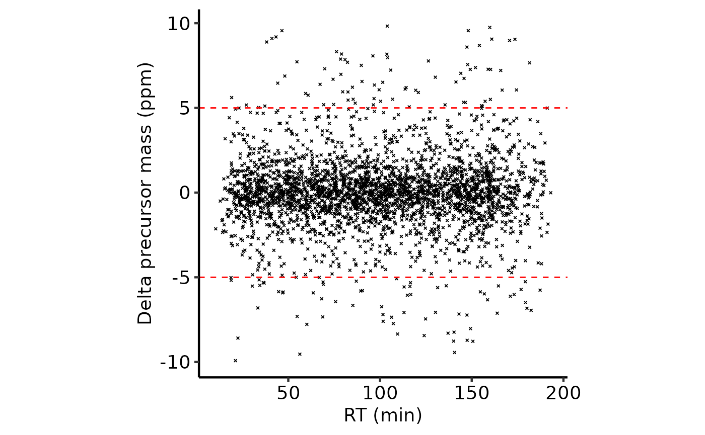
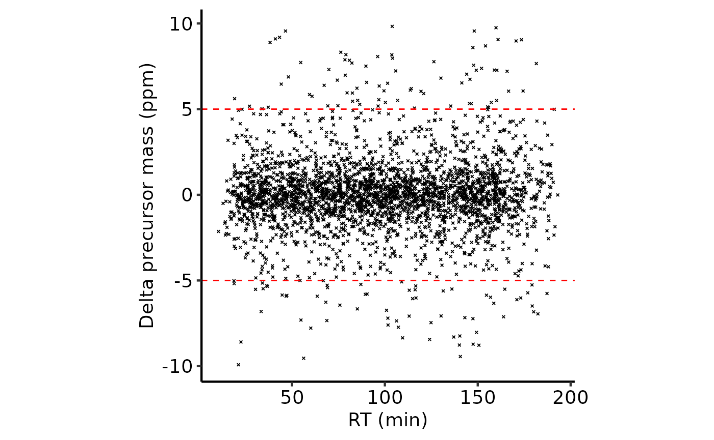

LFQ-DDA QC Peptide-level quantification and summarisation to protein-level abundance
Tom Smith
2025-07-10
LFQ_DDA_Peptide_QC_Summarisation.RmdLabel-Free Quantification (LFQ) is the simplest form of quantitative proteomics, in which different samples are quantified in separate MS runs. Quantification is either performed by Data-Dependent Aquisition (DDA), where the Mass Spectrometer triggers fragmentation of ions within a given m/z range with the aim being to focus attention of individual peptides separately, or Data-Independent Aquisition (DIA), where a much wider m/z range is used and a mix of peptides are co-fragmented and quantified simultaneously by deconvoluting the resultant complex spectra. Here, we will focus on just LFQ-DDA.
Since each sample is run separately, different peptides will be quantified in each sample and the peptide intensities may not be directly comparable between samples. The common solution to the higher burden of missing values is to use the ‘match-between-runs’ (Cox et al. 2014[UPDATE REF!!!]), or the functionally equivalent ‘Minora’ algorithm employed by Proteome Discoverer (PD). These algorithms use the observed retention times of MS1 ions which were successfully spectrum matched in one sample to identify the likely peptide sequence of MS1 ions that could not be spectrum matched in another sample. However, even with these algorithms, DDA LFQ will still typically have many more missing values than labelled LFQ, e.g TMT.
Despite the pitfalls of LFQ, the data analysis is still relatively straightforward, though there are steps that need some careful consideration and quality control assessment.
Load required packages
To clarify which functionality is provided by which package, we will
use package::function. For your own code, there is no need
to specify the package unless you want to maintain this clarity.
Defining the contaminant proteins
We need to remove contaminant proteins. These were defined here using the cRAP database. Below, we parse the contaminants fasta to extract the IDs for the proteins in both ‘cRAP’ format and Uniprot IDs.
crap_fasta_inf <- system.file(
"extdata", "cRAP_20190401.fasta.gz",
package = "biomasslmb"
)
# Extract the protein IDs associated with each cRAP protein
crap_accessions <- biomasslmb::get_crap_fasta_accessions(crap_fasta_inf)
print(head(crap_accessions))
#> [1] "cRAP001" "P00330" "cRAP002" "P02768" "cRAP003" "P00883"Read in input data
We start by reading in quantitative proteomics data into a
QFeatures object, which is the standard Bioconductor object
for holding quantitative proteomics data. See here
for documentation about the QFeatures object.In this case,
we are not adding any experimental details to the QFeatures
object, so the ColData will be empty.
?? is a data set available from the
biomasslmb package
lfq_dda_pd_PeptideGroups.txt is a file available from
the biomasslmb package containing the Peptide-level output
from Proteome Discoverer (PD) for an experiment with 6 samples. It is a
truncated file containing the precursors peptides quantification for
just 500 proteins.
pep_inf <- system.file(
"extdata", "lfq_dda_pd_PeptideGroups.txt",
package = "biomasslmb"
)Inspecting the column names for the abundances, we see the names are
not particularly useful. The Abundance.FXX.na.Sample. part
is irrelevant and the replicate number is not included
infdf <- read.delim(pep_inf)
abundance_cols_ix <-18:23
colnames(infdf)[abundance_cols_ix]
#> [1] "Abundance.F12.na.Sample.A" "Abundance.F13.na.Sample.A"
#> [3] "Abundance.F14.na.Sample.A" "Abundance.F15.na.Sample.B"
#> [5] "Abundance.F16.na.Sample.B" "Abundance.F17.na.Sample.B"Below, we update the column names for the abundance columns
# Clean up sample names
colnames(infdf)[abundance_cols_ix] <- paste(gsub('Abundance.F\\d+.na.Sample.', '',
colnames(infdf)[abundance_cols_ix]), rep(1:3, times=2), sep='_')
colnames(infdf)[abundance_cols_ix]
#> [1] "A_1" "A_2" "A_3" "B_1" "B_2" "B_3"Before we read in the data, we also want to define the experimental conditions for each sample. We can then provide the
exp_design <- data.frame(quantCols=colnames(infdf)[abundance_cols_ix]) %>%
separate(quantCols, sep='_', into=c('condition', 'replicate'), remove = FALSE)
knitr::kable(exp_design)| quantCols | condition | replicate |
|---|---|---|
| A_1 | A | 1 |
| A_2 | A | 2 |
| A_3 | A | 3 |
| B_1 | B | 1 |
| B_2 | B | 2 |
| B_3 | B | 3 |
Now we can read the data into a QFeatures object
# Read in PSM-level quantification from TMT experiment (using QFeatures function)
lfq_qf <- readQFeatures(assayData = infdf,
quantCols = abundance_cols_ix,
colData = exp_design,
name = "peptides_raw")
#> Checking arguments.
#> Loading data as a 'SummarizedExperiment' object.
#> Formatting sample annotations (colData).
#> Formatting data as a 'QFeatures' object.Adding the colData to the peptide-level data too.
colData(lfq_qf[['peptides_raw']]) <- colData(lfq_qf)Extract the gene name and long-form protein name from the descriptions.
tmt_qf[['peptides_raw']] <- add_gene_long_protein_name_pd(tmt_qf[['peptides_raw']])It’s helpful to assess the retention time (RT) for the peptides and the relationship with the delta mass for the precursor ion. Everything looks OK here.
plot_rt_dist(lfq_qf[['peptides_raw']])
plot_rt_vs_delta(lfq_qf[['peptides_raw']]) 

Filter peptides
We first perform routine filtering to remove PSMs that:
- Could originate from contaminants. See
?filter_featuresfor further details, including the removal of ‘associated cRAP’. - Don’t have a unique master protein
- Don’t have any quantification values
# Perform routine raw data filtering.
# - Remove PSMs from contaminant proteins
# - Remove PSMs where protein ID is empty or not unique
lfq_qf[['peptides_filtered']] <- filter_features_pd_dda(lfq_qf[['peptides_raw']],
protein_col='Master.Protein.Accessions', # UPDATE WHEN RE-EXPORTED
contaminant_proteins=crap_accessions,
filter_contaminant =TRUE,
filter_associated_contaminant=TRUE,
unique_master=FALSE,
remove_no_quant = TRUE)
#> Filtering data...
#> 3106 features found from 500 master proteins => Input
#> 242 contaminant proteins supplied
#> 15 proteins identified as 'contaminant associated'
#> 3091 features found from 498 master proteins => contaminant features removed
#> 3091 features found from 498 master proteins => associated contaminant features removed
#> 3091 features found from 498 master proteins => features without a master protein removed
#> 2746 features found from 461 master proteins => features without quantification removedWe will also remove peptides that are not rank 1 according to the search engine
lfq_qf <- lfq_qf %>%
filterFeatures(~ Search.Engine.Rank.by.Search.Engine.Sequest.HT == 1,
i = "peptides_filtered")
#> 'Search.Engine.Rank.by.Search.Engine.Sequest.HT' found in 2 out of 2 assay(s).
biomasslmb:::message_parse(rowData(lfq_qf[['peptides_filtered']]),
'Master.Protein.Accessions',
"Removing peptides that are not rank 1")
#> 2741 features found from 461 master proteins => Removing peptides that are not rank 1For the normalisation and summarisation, we need our quantification values to be on a log-scale, so we log-transform below
lfq_qf[['peptides_filtered']] <- QFeatures::logTransform(
lfq_qf[['peptides_filtered']], base=2)Next, we plot the peptide intensities.
# Plot the peptide-level quantification distributions per sample
plot_quant(lfq_qf[['peptides_filtered']], log2transform=FALSE, method='density') +
scale_colour_manual(values=rep(get_cat_palette(3), each=3)) +
aes(linetype=sample) +
scale_linetype_manual(values=rep(1:3, times=3)) +
xlab('Peptide abundance (log2)')
Normalise
Since the same amount of sample was injected for each sample, we want
to normalise to remove differences in the overall disribution of
abundances. We will thus perform ‘diff.median’ normalisation with
QFeatures::normalize.
lfq_qf[['peptides_norm']] <- QFeatures::normalize(lfq_qf[['peptides_filtered']],
method='diff.median')
# Plot the peptide-level quantification distributions per sample
plot_quant(lfq_qf[['peptides_norm']], log2transform=FALSE, method='density') +
scale_colour_manual(values=rep(get_cat_palette(3), each=3)) +
aes(linetype=sample) +
scale_linetype_manual(values=rep(1:3, times=3)) +
xlab('Peptide abundance (log2)')
Summarising to protein-level abundances
For the summarisation to protein, we will use
robustSummary. We do not need to remove peptides with any
missing values. However, we still don’t want to retain peptides with too
many missing values, since these will not be very informative in
estimating the protein-level quantification.
Below, we inspect the most common patterns for the missing values.
The missingness is most frequently consigned to all samples from one condition and also commonly 2/3 replicates from one condition. It looks like the missingness is far from missing at random (MAR) and is likely missing due to falling below detection limits.
plot_missing_upset(lfq_qf, i='peptides_norm')Since DDA LFQ typically has too many missing values to exclude
peptides with missing values, the
MsCoreUtils::robustSummary method should preferred for
summarisation to protein-level abundance. With
robustSummary, we do not need to remove all PSMs with
missing values since the summarisation algorithm deals with them
appropriately (Sticker et al. 2020)..
However, we still don’t want to retain PSMs with too many missing
values, since these will not be very informative in estimating the
protein-level quantification. Here, we will retain PSMs with at most 4/6
missing values
lfq_qf[['peptides_filtered_missing']] <- QFeatures::filterNA(
lfq_qf[['peptides_norm']], 4/6)
biomasslmb:::message_parse(rowData(lfq_qf[['peptides_filtered_missing']]),
'Master.Protein.Accessions',
"Removing peptides with more than 4/6 missing values")
#> 2704 features found from 457 master proteins => Removing peptides with more than 4/6 missing valuesNext, we remove peptides for proteins with fewer than 2 peptides.
min_peps <- 2
lfq_qf[['peptides_for_summarisation']] <- filter_features_per_protein(
lfq_qf[['peptides_filtered_missing']], min_features = min_peps)
biomasslmb:::message_parse(rowData(lfq_qf[['peptides_for_summarisation']]),
'Master.Protein.Accessions',
"Removing 'one-hit' wonders")
#> 2586 features found from 339 master proteins => Removing 'one-hit' wondersNow we can summarise with robustSummary
set.seed(42)
# Aggregate to protein-level abundances (using QFeatures function)
lfq_qf <- aggregateFeatures(lfq_qf,
i = "peptides_for_summarisation",
#i = "peptides_filtered_missing",
fcol = "Master.Protein.Accessions",
name = "protein",
fun = MsCoreUtils::robustSummary,
maxit=10000)
#> Your quantitative and row data contain missing values. Please read the
#> relevant section(s) in the aggregateFeatures manual page regarding the
#> effects of missing values on data aggregation.Prior to summaristaion, we removed PSMs from proteins with fewer than
2 peptides. However, since we left in peptides with missing values, it’s
possible for some protein-level abundances to be derived from just a
single peptide. We can use the get_protein_no_quant_mask
from biomasslmb to identify where the protein abundances
will be derived from fewer than n features (peptides). We
can then give this mask to mask_protein_level_quant to
replace these quantification values with NA.
# plot = TRUE means we will also get a plot of the number of proteins quantified in each sample
protein_retain_mask <- biomasslmb::get_protein_no_quant_mask(
lfq_qf[['peptides_for_summarisation']], min_features=min_peps, plot=TRUE)
lfq_qf[['protein']] <- biomasslmb::mask_protein_level_quant(
lfq_qf[['protein']], protein_retain_mask)
Re-inspecting missing values at protein-level
Now that we have protein-level abundances, we would like to re-inspect the missing values. Overall, we have 5.064 % missing values, with at most 10.565 % missing values in any given sample. The most common missingness patterns are for the protein to be missing from 1,2 or 3 replicates from a single condition, suggesting the quantification is missing due to detection limits.
plot_missing_upset(lfq_qf, i='protein' )
Inspecting the number of peptides and proteins through the processing steps
Now that we have performed all the filtering steps and summarisation
to protein-level abundances, it’s helpful to visualise how many
peptides/proteins were retained at each level of the processing. We can
use the biomasslmb::get_samples_present and
biomasslmb::plot_samples_present functions for this. First
though, we need to decide which ‘experiments’ we want to plot and define
a named character vector since the QFeatures names are not sufficiently
clear by themselves
Below, we inspect the experiment names.
names(lfq_qf)
#> [1] "peptides_raw" "peptides_filtered"
#> [3] "peptides_norm" "peptides_filtered_missing"
#> [5] "peptides_for_summarisation" "protein"In this case, we don’t want to plot the peptides_norm,
since that’s just the normalised quantification present in
peptides_filtered and no peptides were removed in that
step.
Samples per peptide
We’ll start by inspecting the number of peptides in each experiment.
We therefore define a named character vector all the peptides-level
experiments, excluding psms_filtered_norm. We set the row
variables to be Annotated.Sequence and
Modifications so that we count the number of unique
peptides.
rename_cols <- c('All peptides' = 'peptides_raw' ,
'Quantified, contaminants removed' = 'peptides_filtered',
'No missing values' = 'peptides_filtered_missing',
'>1 PSM per protein' = 'peptides_for_summarisation')
rowvars <- c('Annotated.Sequence', 'Modifications')
samples_present <- get_samples_present(lfq_qf[,,unname(rename_cols)], rowvars, rename_cols)
#> Warning: 'experiments' dropped; see 'drops()'
#> harmonizing input:
#> removing 12 sampleMap rows not in names(experiments)
#> Warning in lifeCycle("longForm", package = "MultiAssayExperiment", title = "longFormat"): 'longFormat' is deprecated.
#> Use 'longForm' instead.
#> See help('longFormat-deprecated').
plot_samples_present(samples_present, rowvars, breaks=seq(2,10,2)) + ylab('PSM')
#> Scale for fill is already present.
#> Adding another scale for fill, which will replace the existing scale.Samples quantified for each PSM at each level of processing
Samples per Protein
Next, we’ll use the same functions to inspect the number of proteins
at each level of processing. We need to supply an updated named
character vector to include the protein experiment and set
the row variables to be just the Master.Protein.Accesions
column.
rename_cols_prot <- c(rename_cols, 'Protein'='protein')
rowvars_prot <- c('Master.Protein.Accessions')
samples_present <- get_samples_present(lfq_qf, rowvars_prot, rename_cols_prot)
#> Warning in lifeCycle("longForm", package = "MultiAssayExperiment", title = "longFormat"): 'longFormat' is deprecated.
#> Use 'longForm' instead.
#> See help('longFormat-deprecated').
plot_samples_present(samples_present, rowvars_prot, breaks=seq(2,10,2))
#> Scale for fill is already present.
#> Adding another scale for fill, which will replace the existing scale.Samples quantified for each protein at each level of processing
From these two plots, we can see that the filtering to ensure that all proteins have >1 peptides removed only a few peptides, but more proteins. Whether this is appropriate will depend on your data in hand.
sessionInfo()
#> R version 4.5.1 (2025-06-13)
#> Platform: x86_64-pc-linux-gnu
#> Running under: Ubuntu 24.04.2 LTS
#>
#> Matrix products: default
#> BLAS: /usr/lib/x86_64-linux-gnu/openblas-pthread/libblas.so.3
#> LAPACK: /usr/lib/x86_64-linux-gnu/openblas-pthread/libopenblasp-r0.3.26.so; LAPACK version 3.12.0
#>
#> locale:
#> [1] LC_CTYPE=C.UTF-8 LC_NUMERIC=C LC_TIME=C.UTF-8
#> [4] LC_COLLATE=C.UTF-8 LC_MONETARY=C.UTF-8 LC_MESSAGES=C.UTF-8
#> [7] LC_PAPER=C.UTF-8 LC_NAME=C LC_ADDRESS=C
#> [10] LC_TELEPHONE=C LC_MEASUREMENT=C.UTF-8 LC_IDENTIFICATION=C
#>
#> time zone: UTC
#> tzcode source: system (glibc)
#>
#> attached base packages:
#> [1] stats4 stats graphics grDevices utils datasets methods
#> [8] base
#>
#> other attached packages:
#> [1] dplyr_1.1.4 tidyr_1.3.1
#> [3] ggplot2_3.5.2 biomasslmb_0.0.4
#> [5] QFeatures_1.18.0 MultiAssayExperiment_1.34.0
#> [7] SummarizedExperiment_1.38.1 Biobase_2.68.0
#> [9] GenomicRanges_1.60.0 GenomeInfoDb_1.44.0
#> [11] IRanges_2.42.0 S4Vectors_0.46.0
#> [13] BiocGenerics_0.54.0 generics_0.1.4
#> [15] MatrixGenerics_1.20.0 matrixStats_1.5.0
#>
#> loaded via a namespace (and not attached):
#> [1] DBI_1.2.3 gridExtra_2.3 rlang_1.1.6
#> [4] magrittr_2.0.3 clue_0.3-66 compiler_4.5.1
#> [7] RSQLite_2.4.1 png_0.1-8 systemfonts_1.2.3
#> [10] vctrs_0.6.5 reshape2_1.4.4 stringr_1.5.1
#> [13] ProtGenerics_1.40.0 pkgconfig_2.0.3 crayon_1.5.3
#> [16] fastmap_1.2.0 backports_1.5.0 XVector_0.48.0
#> [19] labeling_0.4.3 rmarkdown_2.29 UCSC.utils_1.4.0
#> [22] visdat_0.6.0 ragg_1.4.0 UpSetR_1.4.0
#> [25] purrr_1.0.4 bit_4.6.0 xfun_0.52
#> [28] cachem_1.1.0 jsonlite_2.0.0 blob_1.2.4
#> [31] DelayedArray_0.34.1 cluster_2.1.8.1 R6_2.6.1
#> [34] bslib_0.9.0 stringi_1.8.7 RColorBrewer_1.1-3
#> [37] genefilter_1.90.0 jquerylib_0.1.4 Rcpp_1.1.0
#> [40] knitr_1.50 usethis_3.1.0 BiocBaseUtils_1.10.0
#> [43] Matrix_1.7-3 splines_4.5.1 igraph_2.1.4
#> [46] tidyselect_1.2.1 abind_1.4-8 yaml_2.3.10
#> [49] lattice_0.22-7 tibble_3.3.0 plyr_1.8.9
#> [52] withr_3.0.2 KEGGREST_1.48.1 evaluate_1.0.4
#> [55] uniprotREST_1.0.0 desc_1.4.3 survival_3.8-3
#> [58] Biostrings_2.76.0 pillar_1.11.0 corrplot_0.95
#> [61] checkmate_2.3.2 rprojroot_2.0.4 scales_1.4.0
#> [64] xtable_1.8-4 glue_1.8.0 lazyeval_0.2.2
#> [67] tools_4.5.1 robustbase_0.99-4-1 annotate_1.86.1
#> [70] fs_1.6.6 XML_3.99-0.18 grid_4.5.1
#> [73] MsCoreUtils_1.20.0 AnnotationDbi_1.70.0 GenomeInfoDbData_1.2.14
#> [76] naniar_1.1.0 cli_3.6.5 textshaping_1.0.1
#> [79] S4Arrays_1.8.1 AnnotationFilter_1.32.0 gtable_0.3.6
#> [82] DEoptimR_1.1-3-1 sass_0.4.10 digest_0.6.37
#> [85] SparseArray_1.8.0 htmlwidgets_1.6.4 farver_2.1.2
#> [88] memoise_2.0.1 htmltools_0.5.8.1 pkgdown_2.1.3
#> [91] lifecycle_1.0.4 httr_1.4.7 bit64_4.6.0-1
#> [94] MASS_7.3-65